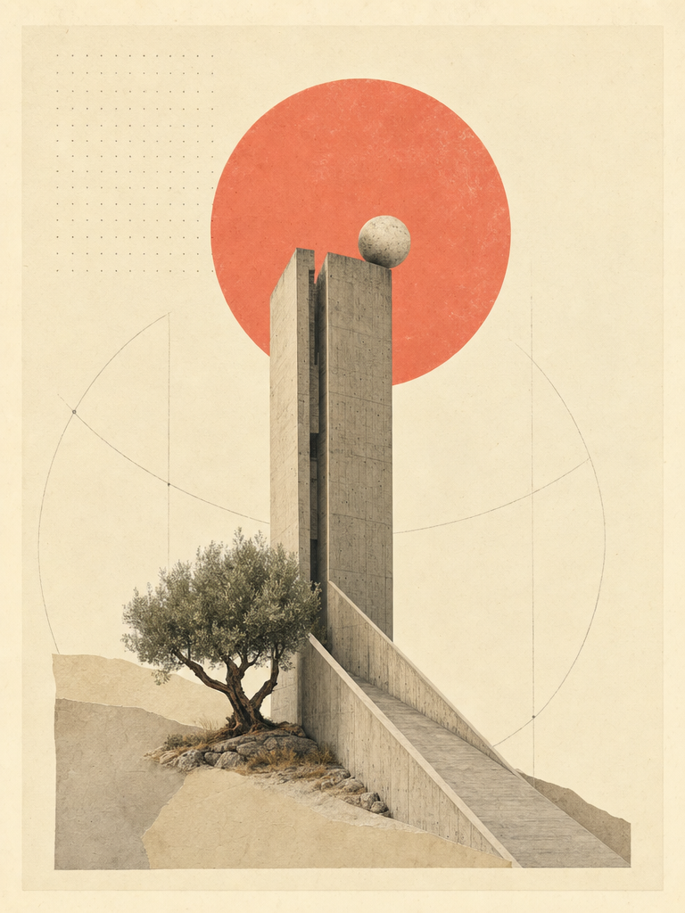

I · KHÁI NIỆMPhilia không chỉ là “tình bạn”
Khi Aristotle dành hẳn hai quyển trong Luân lý học Nicomachean cho philia, ông không nói về cảm xúc thoáng qua. Philia là mối dây gắn bó có lý do: từ tình thân gia đình, tình đồng đội, đến tình yêu lứa đôi và tình bằng hữu công dân.[1]
“Không có bạn bè, không ai muốn sống — dù sở hữu mọi điều tốt đẹp khác.” — EN VIII.1
Câu mở đầu ấy đặt philia ngang hàng với hạnh phúc (eudaimonia), không phải món trang trí của đời sống mà là điều kiện của nó. Người Hy Lạp dùng một từ cho điều mà tiếng Việt phải chẻ ra làm ba: bạn, yêu, thân.
II · PHÂN LOẠIBa tầng: lợi ích, khoái lạc, đức hạnh
Aristotle chia philia thành ba loại theo “cái đáng yêu” (philēton): điều hữu ích, điều mang lại khoái lạc, và điều tốt.[2] Hai loại đầu tan khi lợi ích và khoái lạc tan — như bạn nhậu khi hết rượu, đối tác khi hết hợp đồng.

Chỉ philia hoàn hảo — giữa những người tốt yêu nhau vì chính con người họ — mới bền. Nó hiếm, vì “người tốt” hiếm; nó lâu, vì đức hạnh không phai theo mùa.
III · LUẬN ĐỀ“Người bạn là cái tôi thứ hai”
Luận đề nổi tiếng nhất: allos autos — người bạn là một cái tôi khác.[3] Aristotle không lãng mạn hóa; ông lập luận: ta nhận biết mình qua hành động, nhưng tự quan sát luôn méo mó. Người bạn đức hạnh là tấm gương không nịnh — nơi ta thấy mình rõ hơn.
“Muốn biết mình là ai, hãy nhìn người bạn mà mình yêu vì chính họ.”
Vì thế tình bạn đích thực đòi hỏi cùng sống (suzēn): chia sẻ thời gian, hoạt động, suy nghĩ — không phải số lượng tin nhắn, mà là phẩm chất của hiện diện.
IV · CHÍNH TRỊPhilia và công lý trong thành phố
Aristotle đi xa hơn: philia là keo của polis. Nơi nào công dân xem nhau như bạn — cùng chia sẻ quan niệm về công lý — nơi đó luật pháp ít phải gồng mình.[4] Đọc cùng loạt Về Cộng Hòa của Plato, ta thấy hai ông thầy trò cùng hỏi một câu: điều gì khiến con người sống chung mà không ăn thịt lẫn nhau?

V · THỰC HÀNHSống với Philia hôm nay
Ba bài tập Aristotle để lại, diễn đạt lại cho đời hiện đại: (1) Mỗi tuần một cuộc trò chuyện không màn hình với một người bạn — luyện suzēn. (2) Viết thư khen một đức tính cụ thể của bạn mình — luyện yêu “vì chính họ”. (3) Khi bất đồng, diễn đạt lại ý bạn trước khi phản biện — đó chính là quy tắc số một của phòng đối thoại chúng ta.
“Hạnh phúc của đời người tùy thuộc vào phẩm chất của tư tưởng — và tư tưởng lớn lên trong tình bạn tốt.”
- [1] Aristotle, Nicomachean Ethics VIII.1, 1155a1–5.
- [2] EN VIII.2–3: phân biệt hữu ích (chrēsimon), khoái lạc (hēdu), tốt (agathon).
- [3] EN IX.4, 1166a30: allos autos; xem thêm IX.9 về tự nhận thức qua bạn.
- [4] EN VIII.1, 1155a22–28; Politics III.9 về tình bạn công dân (politikē philia).
- Bản đọc thêm: Plato, Lysis; Cicero, De Amicitia; A. W. Price, Love and Friendship in Plato and Aristotle (1989).